EscapingPath
基线

合组
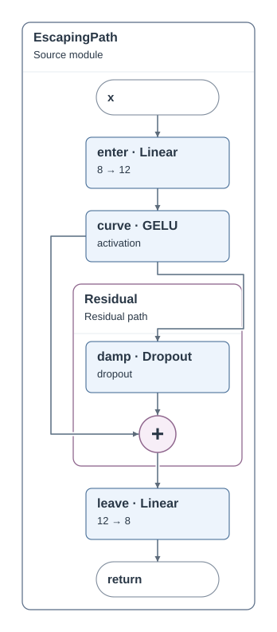
可选开关：角色与后续运算合组。基于证书角色和独占依赖，将角色及其后续普通一元运算放入一个展示阶段；摘要仍列出每一步运算。规则不按模型名称选择。默认 SVG 与冻结基线逐字节相同。
这是局部表达改进。宽度、原子计算直接覆盖及展开后尺寸都可能付出代价；它尚未使整张图达到专用参考的模块组织和版式，也未验证数千节点完整 SVG 的交互性能。
| 输入 | 节点 / 边 | 宽 × 高 | 面积变化 | 交叉 | 直接表达目标 |
|---|---|---|---|---|---|
| QuartzPath | 8/6 → 6/4 | 272 × 736 → 300 × 562 | -15.8% | 0 → 0 | 7 → 4 / 7 |
| RenamedPath | 8/6 → 6/4 | 268 × 736 → 300 × 562 | -14.5% | 0 → 0 | 7 → 4 / 7 |
| EscapingPath | 9/7 → 9/7 | 348 × 792 → 348 × 792 | +0.0% | 0 → 0 | 7 → 7 / 7 |
| InterruptedPath | 7/5 → 7/5 | 295 × 644 → 295 × 644 | +0.0% | 0 → 0 | 6 → 6 / 6 |
| ConditionalStageWeave | 16/14 → 14/12 | 606 × 1104 → 606 × 930 | -15.8% | 1 → 0 | 14 → 11 / 19 |
| MixedStageWeave | 19/16 → 17/14 | 674 × 1100 → 674 × 1008 | -8.4% | 0 → 0 | 16 → 13 / 16 |
| Transformer | 80/91 → 78/89 | 2166 × 3656 → 2166 × 3564 | -2.5% | 47 → 46 | 33 → 29 / 1855 |
左为基线，右为开启合组。ReLU → Dropout 明确打印在摘要中；双击后恢复两个原始运算。此处仅调整查看窗口，内部坐标和连线保持实际输出。
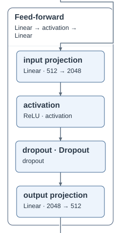
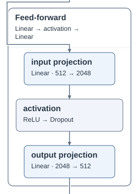
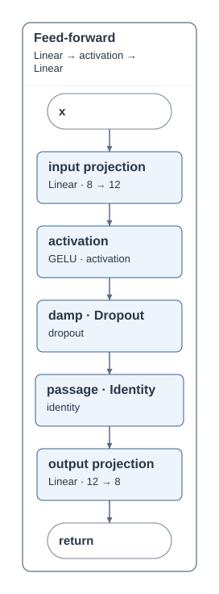
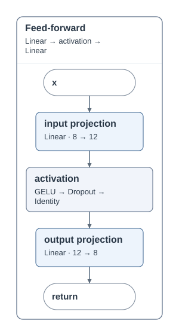
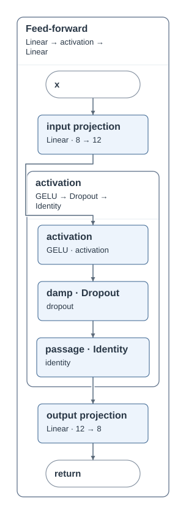
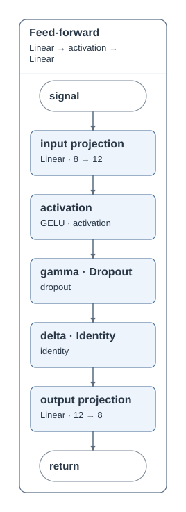
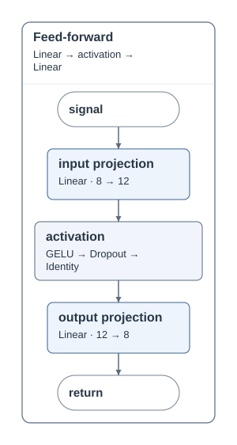
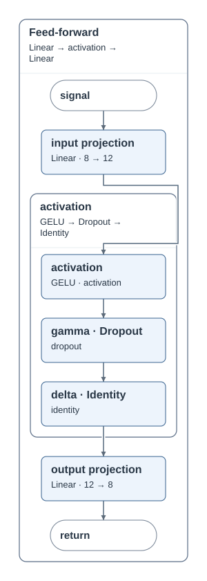


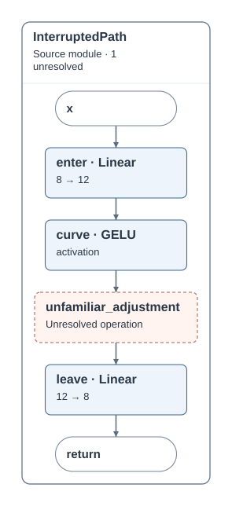
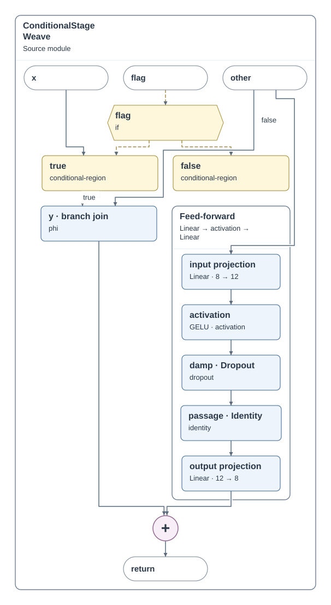
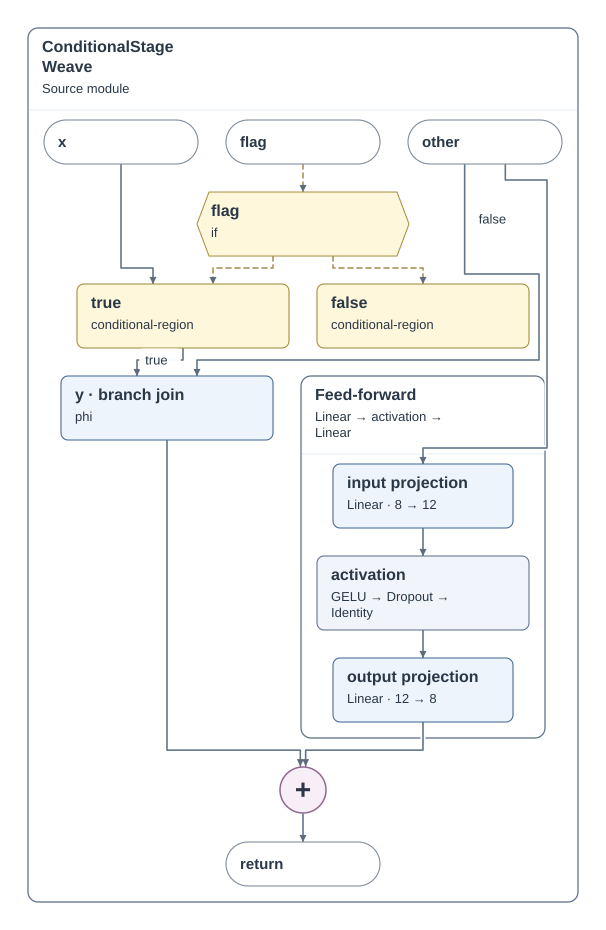
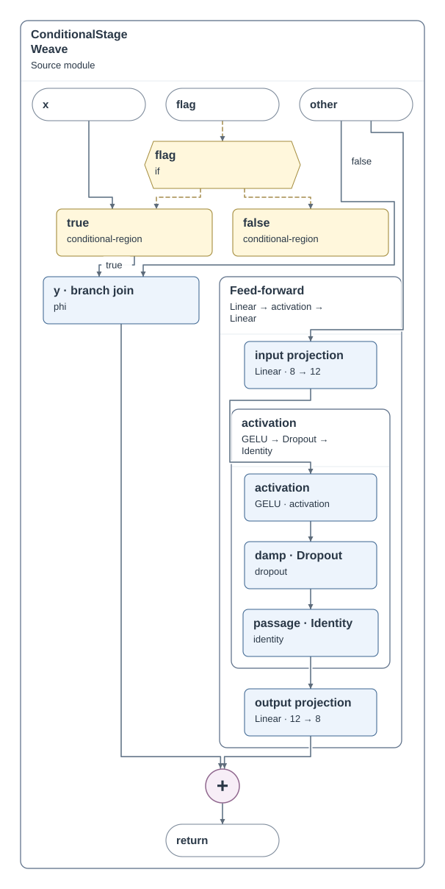


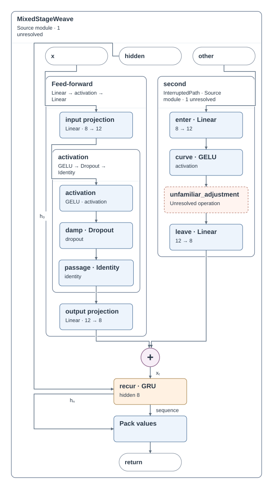
专用详细图作为表达质量参照。整体差距仍然存在；本次只改变两个局部运算阶段。隐藏原始运算仍记为未直接表达，不能用摘要冒充原子计算覆盖。